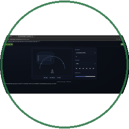

Ceol Gan Eagla Tuner
Start Mic
Mic: Off
🎸
Guitar
🎻
Violin
🪕
Tenor Banjo
🎶
Mandolin
🎶
Bouzouki
🎵
Ukulele
🎸
Bass
🎻
Viola
🎻
Cello
Tuning
A4
A4=440
Mic Level
Tuning notes:
E A D G B E
—
Stopped
Bar turns
green
when in tune;
orange
= too low,
red
= too high.
Time
4/4
6/8 (Jig)
3/4
2/4
Tempo
Start Metronome